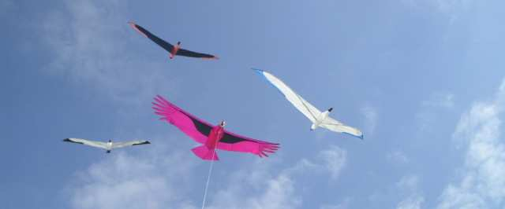

| Accueil | Albatros | Spiralier et Messager | Megoel | Indoor | Condor | Albatros2 | Demoiselle | P |
 Depuis longtemps, j'avais pensé faire un oiseau avec des "rémiges", les grandes plumes en bout d'aile. Des vraies rémiges, pas comme sur le King où elles étaient tenues en bout par un jonc. Non, je voulais qu'elles se comportent comme des vraies. Il fallait donc qu'elle puissent se courber vers le haut comme chez les condors ou les planeurs en voltige MAIS qu'elles ne plient pas tristement vers l'arrière comme un parapluie retourné par le vent...
Depuis longtemps, j'avais pensé faire un oiseau avec des "rémiges", les grandes plumes en bout d'aile. Des vraies rémiges, pas comme sur le King où elles étaient tenues en bout par un jonc. Non, je voulais qu'elles se comportent comme des vraies. Il fallait donc qu'elle puissent se courber vers le haut comme chez les condors ou les planeurs en voltige MAIS qu'elles ne plient pas tristement vers l'arrière comme un parapluie retourné par le vent... Pour ces essais, j'ai confectionné diverses plumes prototypes. Après une tentative avec un jonc souple pour l'arrondi du bout de plume, je suis passé à la feuille de plastique semi-rigide découpée à la forme voulue. Le plastique ? Bouteille de soda gazeux découpée pour garder le cylindre central, coupé et ensuite aplati. Pour aplatir, il suffit de courber très fort (pratiquement plier) en sens inverse. On arrive à quelque chose de suffisamment plat pour mon besoin. En courbant ensuite comme désiré, on maintient la rigidité nécessaire.
Pour ces essais, j'ai confectionné diverses plumes prototypes. Après une tentative avec un jonc souple pour l'arrondi du bout de plume, je suis passé à la feuille de plastique semi-rigide découpée à la forme voulue. Le plastique ? Bouteille de soda gazeux découpée pour garder le cylindre central, coupé et ensuite aplati. Pour aplatir, il suffit de courber très fort (pratiquement plier) en sens inverse. On arrive à quelque chose de suffisamment plat pour mon besoin. En courbant ensuite comme désiré, on maintient la rigidité nécessaire. J'ai alors trouvé chez Leroy-Merlin des petites lattes en plastique armé de fibre de verre de 2 mm d'épaisseur et 11 de large, en longueur de 1 m. Cela convient bien à mon besoin, mes plus grandes plumes faisant 80 cm : il reste 20 cm pour les maintenir, un peu juste, mais ça va. (Nota : j'ai aussi découvert avec plaisir après les premiers essais qu'elles étaient pratiquement incassables !)
J'ai alors trouvé chez Leroy-Merlin des petites lattes en plastique armé de fibre de verre de 2 mm d'épaisseur et 11 de large, en longueur de 1 m. Cela convient bien à mon besoin, mes plus grandes plumes faisant 80 cm : il reste 20 cm pour les maintenir, un peu juste, mais ça va. (Nota : j'ai aussi découvert avec plaisir après les premiers essais qu'elles étaient pratiquement incassables !) La latte tient le bout d'aile en plastique en passant à force dans un "ourlet" de la feuille de plastique. Comment réaliser un ourlet, me direz-vous ? Pas difficile, on fait comme avec du spi ! Hé oui, ce plastique se coud très bien à la machine à coudre. L'aiguille force un peu pour rentrer, mais à peine. Et une fois son trou fait, elle glisse sans problème dedans.
La latte tient le bout d'aile en plastique en passant à force dans un "ourlet" de la feuille de plastique. Comment réaliser un ourlet, me direz-vous ? Pas difficile, on fait comme avec du spi ! Hé oui, ce plastique se coud très bien à la machine à coudre. L'aiguille force un peu pour rentrer, mais à peine. Et une fois son trou fait, elle glisse sans problème dedans. Bon, c'est pas tout : il faut faire tenir la latte à la structure. Après divers essais, j'ai réalisé une armature avec 2 tubes qui se rejoignent au bord de fuite. Le longeron d'aile s'appuie sur les 2 tubes et les maintient. Les lattes sont attachées (oui avec des ficelles, mais collées) sur un des 2 tubes et coulissent sur l'autre (obligatoire, si on veut pouvoir replier le tout). Les attaches sont un peu complexes car elles sont conçues pour tirer dans des sens bien définis, empêcher la rotation de la latte et permettre le coulissement et le pivotement pour le repliement. Ca m'a demandé bien de la réflexion et pas mal de reprises...
Bon, c'est pas tout : il faut faire tenir la latte à la structure. Après divers essais, j'ai réalisé une armature avec 2 tubes qui se rejoignent au bord de fuite. Le longeron d'aile s'appuie sur les 2 tubes et les maintient. Les lattes sont attachées (oui avec des ficelles, mais collées) sur un des 2 tubes et coulissent sur l'autre (obligatoire, si on veut pouvoir replier le tout). Les attaches sont un peu complexes car elles sont conçues pour tirer dans des sens bien définis, empêcher la rotation de la latte et permettre le coulissement et le pivotement pour le repliement. Ca m'a demandé bien de la réflexion et pas mal de reprises... Pour tendre l'ensemble latéralement, une canne à pêche de chaque côté porte au bout une encoche où passe une ligne transverse. Celle-ci est prise en 3 points sur le tube carbone le plus externe. En fait chaque longeron d'aile est une canne de 4 m dont je ne conserve que 2,2 morceaux. De plus, comme ces cannes sont peu courbées en vol (ce qui empêcherait en grande partie le coulissement comme dans l'Albatros où elles sont très arquées), je les ai inversées, c'est-à-dire que chacune rentre par le petit bout de la plus grosse suivante, avec une butée collée pour l'empêcher de rentrer plus. Avec du ruban plastique, on rattrape les jeux excessifs, pas très graves de toute façon. Au milieu, un morceau de canne sert de raccord central entre les 2 côtés. Plus gros d'un côté, me direz-vous ? Oui, et alors ? Un petit tour de ruban et c'est léger, solide et ne cause aucun problème.
Pour tendre l'ensemble latéralement, une canne à pêche de chaque côté porte au bout une encoche où passe une ligne transverse. Celle-ci est prise en 3 points sur le tube carbone le plus externe. En fait chaque longeron d'aile est une canne de 4 m dont je ne conserve que 2,2 morceaux. De plus, comme ces cannes sont peu courbées en vol (ce qui empêcherait en grande partie le coulissement comme dans l'Albatros où elles sont très arquées), je les ai inversées, c'est-à-dire que chacune rentre par le petit bout de la plus grosse suivante, avec une butée collée pour l'empêcher de rentrer plus. Avec du ruban plastique, on rattrape les jeux excessifs, pas très graves de toute façon. Au milieu, un morceau de canne sert de raccord central entre les 2 côtés. Plus gros d'un côté, me direz-vous ? Oui, et alors ? Un petit tour de ruban et c'est léger, solide et ne cause aucun problème.

 Et voilà, l'aile était finie (ça a l'air simple, hé bien je peux vous dire que non !), mais il fallait essayer en vol et vérifier que ça marchait, pour ne pas faire pour rien le corps en 3D qui représentait beaucoup de boulot aussi. Alors j'ai mis juste un tube central pour attacher la bride et vogue la galère.
Hé bien ça a volé pas mal, sauf que la toile n'était pas tendue, que l'aile plongeait en avant en haut de fenêtre et partait vers le côté autrement. Tous défauts quasiment classiques que j'ai contrés au prix d'un cycle de reprises / modifications / essais sur un mois, la durée des vols passant progressivement de 10 secondes à 15 mn !
Et voilà, l'aile était finie (ça a l'air simple, hé bien je peux vous dire que non !), mais il fallait essayer en vol et vérifier que ça marchait, pour ne pas faire pour rien le corps en 3D qui représentait beaucoup de boulot aussi. Alors j'ai mis juste un tube central pour attacher la bride et vogue la galère.
Hé bien ça a volé pas mal, sauf que la toile n'était pas tendue, que l'aile plongeait en avant en haut de fenêtre et partait vers le côté autrement. Tous défauts quasiment classiques que j'ai contrés au prix d'un cycle de reprises / modifications / essais sur un mois, la durée des vols passant progressivement de 10 secondes à 15 mn !
 Oui, mais quand ça vole, on croit que c'est presque fini ! Hé bien, je voulais un corps en 3 D avec une tête assez réaliste, l'arrière du corps restant du type Albatros, en caisson triangulaire. J'avais à peu près dessiné sur le Mac ce que je voulais. Je ne croyais pas que ce serait si long à réaliser !
Oui, mais quand ça vole, on croit que c'est presque fini ! Hé bien, je voulais un corps en 3 D avec une tête assez réaliste, l'arrière du corps restant du type Albatros, en caisson triangulaire. J'avais à peu près dessiné sur le Mac ce que je voulais. Je ne croyais pas que ce serait si long à réaliser !
 J'ai commencé par la tête, le reste devant suivre plus simplement. J'ai d'abord réalisé une sculpture en mousse (Bultex, s'il vous plaît).
J'ai commencé par la tête, le reste devant suivre plus simplement. J'ai d'abord réalisé une sculpture en mousse (Bultex, s'il vous plaît). C'est assez facile à mettre en oeuvre, on peut découper des morceaux... les coller...
C'est assez facile à mettre en oeuvre, on peut découper des morceaux... les coller... ...et "sculpter" la forme finale avec de simples ciseaux (mais non, pas à bois, à tissu !). Le spi égalisera la surface.
...et "sculpter" la forme finale avec de simples ciseaux (mais non, pas à bois, à tissu !). Le spi égalisera la surface.

 Au final, ça donnera ça, mais il faudra d'abord faire la collerette blanche. Et le raccordement au corps a demandé bien du travail mais fait quand même encore des plis, comme la tête, et en fera longtemps.
Au final, ça donnera ça, mais il faudra d'abord faire la collerette blanche. Et le raccordement au corps a demandé bien du travail mais fait quand même encore des plis, comme la tête, et en fera longtemps. Cette collerette est en gros un tore rempli de mousse, et il faut évidemment plus de tissu sur l'extérieur que sur l'intérieur, pour ceux qui croient que c'est facile... et la pose n'est pas biblique.
Cette collerette est en gros un tore rempli de mousse, et il faut évidemment plus de tissu sur l'extérieur que sur l'intérieur, pour ceux qui croient que c'est facile... et la pose n'est pas biblique.


 Finalement, le corps et la queue ont été assemblés sur le montage pour les essayages et retouches.
Finalement, le corps et la queue ont été assemblés sur le montage pour les essayages et retouches.


 La surface de la queue à l'arrière fait piquer le bestiau : je raccourcis la queue, je mets un lest à l'arrière. Pour les départs latéraux, j'augmente le dièdre, je bloque mieux les plumes et plusieurs autres modifs dictées par mon expérience, peu visibles mais efficaces.
La surface de la queue à l'arrière fait piquer le bestiau : je raccourcis la queue, je mets un lest à l'arrière. Pour les départs latéraux, j'augmente le dièdre, je bloque mieux les plumes et plusieurs autres modifs dictées par mon expérience, peu visibles mais efficaces.
 Et puis les festivals reprennent, il était temps que je finisse ! Le press-book s'enrichit, avec des commentaires quelquefois surprenants ! Enfin à Berck, après encore quelques bricolos, il peut voler à 25 m de haut toute la journée sans que je m'en occupe, c'est extra ! Mais il reste encore un peu de travail : parties de l'aile pas assez tendues, plis sur le corps... Ca viendra, dans les semaines (ou les mois...) à venir.
Et puis les festivals reprennent, il était temps que je finisse ! Le press-book s'enrichit, avec des commentaires quelquefois surprenants ! Enfin à Berck, après encore quelques bricolos, il peut voler à 25 m de haut toute la journée sans que je m'en occupe, c'est extra ! Mais il reste encore un peu de travail : parties de l'aile pas assez tendues, plis sur le corps... Ca viendra, dans les semaines (ou les mois...) à venir.
